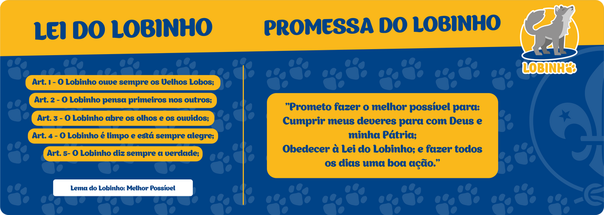
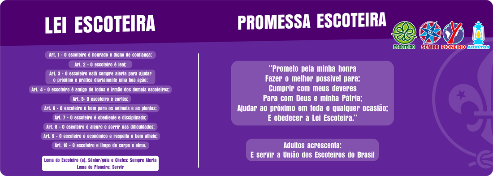

30º GRUPO ESCOTEIRO MATHIAS DE ALBUQUERQUE (30GEMAPE)
escoteiros30pe é a nossa nova identidade de comunicação, criada para tornar o grupo mais fácil de encontrar, reconhecer e divulgar, sem deixar de lado a história construída ao longo de mais de duas décadas.
O ESCOTISMO
O Movimento Escoteiro foi criado, por essência, para ser um movimento voltado para o jovem, e também feito por eles, com o auxílio de adultos voluntários. Se chama movimento por estar sempre em constante transformação, acompanhando as mudanças da geração, mas sem perder seu propósito educacional.
Por meio de atividades variadas e atraentes, o Escotismo incentiva os jovens a assumirem seu próprio desenvolvimento. Por meio da vivência nas Unidades Escoteiras Locais, os jovens aprendem e tomam gosto por se envolverem com a comunidade, se transformando em verdadeiros líderes. Por meio da proatividade e da preocupação com o próximo e com o meio ambiente, os jovens são engajados em construir um mundo melhor, mais justo e mais fraterno.
É no grupo escoteiro que o Escotismo verdadeiramente acontece. Quem aplica as atividades, dinâmicas e ajuda os escoteiros são os adultos voluntários, conhecidos por escotistas. Os jovens, por sua vez, são divididos conforme sua faixa etária para que o Programa Educativo possa ser trabalhado nas seis áreas de desenvolvimento: físico, intelectual, social, afetivo, espiritual e de caráter, com base nas características individuais de cada fase.
Leis e Promessas no Escotismo


O Grupo Escoteiro
Grupo Escoteiro: com efetivo mínimo de vinte associados registrados, congrega pelo menos duas Seções e deve contar com Assembleia de Grupo, Diretoria de Grupo e Comissão Fiscal de Grupo para que seja reconhecido pela União dos Escoteiros do Brasil, por meio do Certificado de Autorização de Funcionamento Anual. Tem por objetivo tornar-se completo, atendendo aos jovens de 6 anos e meio aos 22 anos e de ambos os sexos, de modo a oferecer um programa educativo integral, progressivo e contínuo.

A HISTÓRIA DO TRIGÉSIMO
Em 23 de maio de 2005, começava a história do 30º Grupo Escoteiro Mathias de Albuquerque – 30º GEMAPE, fundado dentro do Batalhão de Polícia de Choque (BPChoque), instituição que desde o início apoiou a criação e o desenvolvimento do grupo.
O nome Mathias de Albuquerque foi escolhido em referência ao patrono do próprio Batalhão de Polícia de Choque, fortalecendo desde a fundação a ligação entre o grupo escoteiro e a instituição que o acolheu.
OS PRIMEIROS PASSOS
A criação do Trigésimo teve como um de seus principais incentivadores o então comandante do BPChoque, Coronel Meira, hoje Deputado Federal Coronel Meira. Foi ele quem deu início à implantação do grupo e indicou policiais do próprio batalhão para formar a primeira equipe responsável por conduzir as atividades.
Entre os primeiros nomes estavam o então Tenente Arruda, indicado para a presidência; Martins, que esteve à frente dos Lobinhos; Adilson Rufino, ligado à chefia dos Escoteiros; e Rubens, que integrou a diretoria. Juntos a outros policiais e colaboradores, eles deram os primeiros passos para transformar a ideia de um grupo escoteiro dentro do BPChoque em realidade.
Naquele período, muitos dos primeiros jovens vieram da Escola Municipal Soldado José Antônio do Nascimento que funcionava dentro do próprio batalhão. O grupo também recebeu crianças e adolescentes de comunidades e bairros localizados no entorno do BPChoque, como Joana Bezerra, Coelhos, Santo Amaro, Mangueira, Mustardinha e Bongi, entre outros.
Para conhecer e estruturar o funcionamento do Movimento Escoteiro, o Trigésimo contou com o apoio fundamental do seu grupo padrinho, o 25º Grupo Escoteiro Felipe Camarão. Na época, o 25º compartilhou conhecimentos, experiências e orientações que ajudaram a formar as primeiras bases do novo grupo.
UMA PARCERIA QUE ATRAVESSOU OS ANOS
Desde 2005, o BPChoque permanece presente na história do Trigésimo. O batalhão continua oferecendo apoio às atividades do grupo, inclusive disponibilizando espaços dentro de sua sede para reuniões e atividades escoteiras e, quando possível, apoio com transporte para atividades realizadas na Região Metropolitana do Recife.
A relação com o 25º Grupo Escoteiro Felipe Camarão também permanece, os dois grupos continuam próximos e preservam a relação construída desde os primeiros anos.
UMA HISTÓRIA QUE CONTINUOU MESMO DIANTE DOS DESAFIOS
Em 2020, assim como aconteceu com grupos escoteiros de todo o país, as atividades presenciais precisaram ser interrompidas em razão da pandemia de COVID-19.
Mas o Trigésimo não parou.
Durante esse período, as atividades passaram a acontecer de forma online, permitindo que os jovens continuassem aprendendo, convivendo e vivendo o Escotismo mesmo à distância. Quando as atividades presenciais voltaram a ser permitidas, o grupo retomou suas reuniões e atividades no BPChoque.
21 ANOS DEPOIS...
Em 2026, o Trigésimo completa 21 anos. Ao longo dessa caminhada, centenas de jovens e adultos passaram pelo grupo e ajudaram a construir uma história que continua sendo escrita.
Um dos maiores exemplos dessa continuidade é o Chefe Francisco, atualmente o único fundador que permanece ativo no grupo. Sua história começou ainda em 2005, quando entrou no Trigésimo como Lobinho, vindo da escolinha que funcionava dentro do BPChoque.
Desde então, passou por todos os ramos do Movimento Escoteiro, do Lobinho ao Pioneiro, até chegar à chefia. Sua trajetória acompanha praticamente toda a história do grupo, representando a continuidade de uma geração para outra.
Hoje, o 30º GEMAPE vive um novo momento. Pela primeira vez em sua história, o grupo possui todas as seções tradicionais em funcionamento, desde os Lobinhos até os Pioneiros, permitindo que os jovens tenham a oportunidade de permanecer no grupo durante diferentes etapas de sua formação.
O único ramo que ainda não está em funcionamento é o Ramo Filhotes.
Mais de duas décadas depois de sua fundação, o Trigésimo continua com suas portas abertas para novas gerações, mantendo viva a união entre Escotismo, comunidade e BPChoque.
A história começou em 2005.
21 anos depois, ela continua sendo escrita.